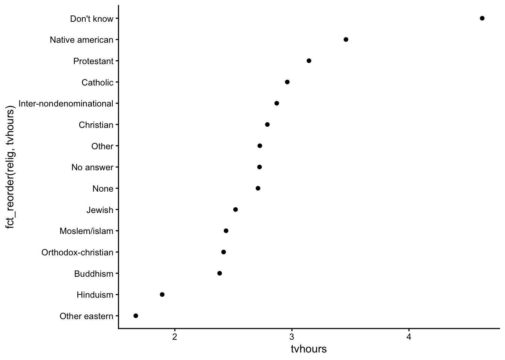

Determine the class of a given object and identify concerns to be wary of when manipulating an object of that class (numerics, logicals, factors, dates, strings, data.frames)
Explain what vector recycling is, when it can be a problem, and how to avoid those problems
Use a variety of functions to wrangle numerical and logical data
Extract date-time information using the lubridate package
Use the forcats package to wrangle factor data
Helpful Cheatsheets
RStudio (Posit) maintains a collection of wonderful cheatsheets. The following will be helpful:
mutate(): creates/changes columns/elements in a data frame/tibble
select(): keeps subset of columns/elements in a data frame/tibble
filter(): keeps subsets of rows in a data frame/tibble
arrange(): sorts rows in a data frame/tibble
group_by(): internally groups rows in data frame/tibble by values in 1 or more columsn/elements
summarize(): collapses/combines information across rows using functions such as n(), sum(), mean(), min(), max(), median(), sd()
count(): shortcut for group_by() |> summarize(n = n())
left_join(): mutating join of two data frames/tibbles keeping all rows in left data frame
full_join(): mutating join of two data frames/tibbles keeping all rows in both data frames
inner_join(): mutating join of two data frames/tibbles keeping rows in left data frame that find match in right
semi_join(): filtering join of two data frames/tibbles keeping rows in left data frame that find match in right
anti_join(): filtering join of two data frames/tibbles keeping rows in left data frame that do not find match in right
pivot_wider(): rearrange values from two columns to many(one column becomes the names of new variables, one column becomes the values of the new variables)
pivot_longer(): rearrange values from many columns to two (the names of the columns go to one new variable, the values of the columns go to a second new variable)
Vectors
An atomic vector is a storage container in R where all elements in the container are of the same type. The types that are relevant to data science are:
logical (also known as boolean)
numbers
integer
numeric floating point (also known as double)
character string
Date and date-time (saved as POSIXct)
factor
Function documentation will refer to vectors frequently.
See examples below:
ggplot2::scale_x_continuous()
breaks: A numeric vector of positions
labels: A character vector giving labels (must be same length as breaks)
shiny::sliderInput()
value: The initial value of the slider […] A length one vector will create a regular slider; a length two vector will create a double-ended range slider.
When you need a vector, you can create one manually using
c(): the combine function
Or you can create one based on available data using
dataset |> mutate(newvar = variable > 5) |> pull(newvar): taking one column out of a dataset
dataset |> pull(variable) |> unique(): taking one column out of a dataset and finding unique values
[1] Ideal Premium Good Very Good Fair
Levels: Fair < Good < Very Good < Premium < Ideal
Logicals
Notes
What does a logical vector look like?
x <-c(TRUE, FALSE, NA)x
[1] TRUE FALSE NA
class(x)
[1] "logical"
You will often create logical vectors with comparison operators: >, <, <=, >=, ==, !=.
x <-c(1, 2, 9, 12)x <2
[1] TRUE FALSE FALSE FALSE
x <=2
[1] TRUE TRUE FALSE FALSE
x >9
[1] FALSE FALSE FALSE TRUE
x >=9
[1] FALSE FALSE TRUE TRUE
x ==12
[1] FALSE FALSE FALSE TRUE
x !=12
[1] TRUE TRUE TRUE FALSE
When you want to check for set containment, the %in% operator is the correct way to do this (as opposed to ==).
x <-c(1, 2, 9, 4)x ==c(1, 2, 4)
Warning in x == c(1, 2, 4): longer object length is not a multiple of shorter
object length
[1] TRUE TRUE FALSE FALSE
x %in%c(1, 2, 4)
[1] TRUE TRUE FALSE TRUE
The Warning: longer object length is not a multiple of shorter object length is a manifestation of vector recycling.
In R, if two vectors are being combined or compared, the shorter one will be repeated to match the length of the longer one–even if longer object length isn’t a multiple of the shorter object length. We can see the exact recycling that happens below:
x <-c(1, 2, 9, 4)x ==c(1, 2, 4)
Warning in x == c(1, 2, 4): longer object length is not a multiple of shorter
object length
[1] TRUE TRUE FALSE FALSE
x ==c(1, 2, 4, 1) # This line demonstrates the recycling that happens on the previous line
[1] TRUE TRUE FALSE FALSE
Logical vectors can also be created with functions. is.na() is one useful example:
x <-c(1, 4, 9, NA)x ==NA
[1] NA NA NA NA
is.na(x)
[1] FALSE FALSE FALSE TRUE
We can negate a logical object with !. We can combine logical objects with & (and) and | (or).
x <-c(1, 2, 4, 9)x >1& x <5
[1] FALSE TRUE TRUE FALSE
!(x >1& x <5)
[1] TRUE FALSE FALSE TRUE
x <2| x >8
[1] TRUE FALSE FALSE TRUE
We can summarize logical vectors with:
any(): Are ANY of the values TRUE?
all(): Are ALL of the values TRUE?
sum(): How many of the values are TRUE?
mean(): What fraction of the values are TRUE?
x <-c(1, 2, 4, 9)any(x ==1)
[1] TRUE
all(x <10)
[1] TRUE
sum(x ==1)
[1] 1
mean(x ==1)
[1] 0.25
if_else() and case_when() are functions that allow you to return values depending on the value of a logical vector. You’ll explore the documentation for these in the following exercises.
Note: ifelse() (from base R) and if_else() (from tidyverse) are different functions. We prefer if_else() for many reasons (examples below).
Noisy to make sure you catch issues/bugs
Can explicitly handle missing values
Keeps dates as dates
Examples
x <-c(-1, -2, 4, 9, NA)ifelse(x >0, 'positive', 'negative')
[1] "negative" "negative" "positive" "positive" NA
if_else(x >0, 'positive', 'negative')
[1] "negative" "negative" "positive" "positive" NA
ifelse(x >0, 1, 'negative') # Bad: doesn't complain with combo of data types
[1] "negative" "negative" "1" "1" NA
if_else(x >0, 1, 'negative') # Good:noisy to make sure you catch issues
Error in `if_else()`:
! Can't combine `true` <double> and `false` <character>.
if_else(x >0, 'positive', 'negative', missing ='missing') # Good: can explicitly handle NA
Warning: There were 2 warnings in `mutate()`.
The first warning was:
ℹ In argument: `is_fpi = cut == c("Fair", "Premium", "Ideal")`.
Caused by warning in `==.default`:
! longer object length is not a multiple of shorter object length
ℹ Run `dplyr::last_dplyr_warnings()` to see the 1 remaining warning.
# A tibble: 1,000 × 12
carat cut color clarity depth table price x y z price_cat1
<dbl> <ord> <ord> <ord> <dbl> <dbl> <int> <dbl> <dbl> <dbl> <chr>
1 0.23 Ideal E SI2 61.5 55 326 3.95 3.98 2.43 low
2 0.21 Premium E SI1 59.8 61 326 3.89 3.84 2.31 low
3 0.23 Good E VS1 56.9 65 327 4.05 4.07 2.31 low
4 0.29 Premium I VS2 62.4 58 334 4.2 4.23 2.63 low
5 0.31 Good J SI2 63.3 58 335 4.34 4.35 2.75 low
6 0.24 Very Good J VVS2 62.8 57 336 3.94 3.96 2.48 low
7 0.24 Very Good I VVS1 62.3 57 336 3.95 3.98 2.47 low
8 0.26 Very Good H SI1 61.9 55 337 4.07 4.11 2.53 low
9 0.22 Fair E VS2 65.1 61 337 3.87 3.78 2.49 low
10 0.23 Very Good H VS1 59.4 61 338 4 4.05 2.39 low
# ℹ 990 more rows
# ℹ 1 more variable: price_cat2 <chr>
Numerics
Notes
Numerical data can be of class integer or numeric (representing real numbers).
x <-1:3x
[1] 1 2 3
class(x)
[1] "integer"
x <-c(1+1e-9, 2, 3)x
[1] 1 2 3
class(x)
[1] "numeric"
The Numbers chapter in R4DS covers the following functions that are all useful for wrangling numeric data:
n(), n_distinct(): Counting and counting the number of unique values
sum(is.na()): Counting the number of missing values
min(), max()
pmin(), pmax(): Get the min and max across several vectors
Integer division: %/%. Remainder: %%
121 %/% 100 = 1 and 121 %% 100 = 21
round(), floor(), ceiling(): Rounding functions (to a specified number of decimal places, to the largest integer below a number, to the smallest integer above a number)
Note that all numerical summary functions have an na.rm argument that should be set to TRUE if you have missing data.
Exercises
Exercises will be on HW4.
The best way to add these functions and operators to your vocabulary is to need to recall them. Refer to the list of functions above as you try the exercises.
You will need to reference function documentation to look at arguments and look in the Examples section.
Dates
Notes
The lubridate package contains useful functions for working with dates and times. The lubridatefunction reference is a useful resource for finding the functions you need. We’ll take a brief tour of this reference page.
We’ll use the lakers dataset in the lubridate package to illustrate some examples.
lakers <-as_tibble(lakers)head(lakers)
# A tibble: 6 × 13
date opponent game_type time period etype team player result points type
<int> <chr> <chr> <chr> <int> <chr> <chr> <chr> <chr> <int> <chr>
1 2.01e7 POR home 12:00 1 jump… OFF "" "" 0 ""
2 2.01e7 POR home 11:39 1 shot LAL "Pau … "miss… 0 "hoo…
3 2.01e7 POR home 11:37 1 rebo… LAL "Vlad… "" 0 "off"
4 2.01e7 POR home 11:25 1 shot LAL "Dere… "miss… 0 "lay…
5 2.01e7 POR home 11:23 1 rebo… LAL "Pau … "" 0 "off"
6 2.01e7 POR home 11:22 1 shot LAL "Pau … "made" 2 "hoo…
# ℹ 2 more variables: x <int>, y <int>
Below we use date-time parsing functions to represent the date and time variables with date-time classes:
# A tibble: 34,624 × 5
# Groups: date, opponent, period [314]
date opponent time period diff_btw_plays_sec
<date> <chr> <Period> <int> <dbl>
1 2008-10-28 POR 12M 0S 1 NA
2 2008-10-28 POR 11M 39S 1 -21
3 2008-10-28 POR 11M 37S 1 -2
4 2008-10-28 POR 11M 25S 1 -12
5 2008-10-28 POR 11M 23S 1 -2
6 2008-10-28 POR 11M 22S 1 -1
7 2008-10-28 POR 11M 22S 1 0
8 2008-10-28 POR 11M 22S 1 0
9 2008-10-28 POR 11M 0S 1 -22
10 2008-10-28 POR 10M 53S 1 -7
# ℹ 34,614 more rows
Exercises
Exercises will be on HW4.
Factors
Notes
Creating factors
In R, factors are made up of two components: the actual values of the data and the possible levels within the factor. Creating a factor requires supplying both pieces of information.
months <-c("Mar", "Dec", "Jan", "Apr", "Jul")
However, if we were to sort this vector, R would sort this vector alphabetically.
# alphabetical sortsort(months)
[1] "Apr" "Dec" "Jan" "Jul" "Mar"
We can fix this sorting by creating a factor version of months. The levels argument is a character vector that specifies the unique values that the factor can take. The order of the values in levels defines the sorting of the factor.
months_fct <-factor(months, levels = month.abb) # month.abb is a built-in variablemonths_fct
[1] Mar Dec Jan Apr Jul
Levels: Jan Feb Mar Apr May Jun Jul Aug Sep Oct Nov Dec
sort(months_fct)
[1] Jan Mar Apr Jul Dec
Levels: Jan Feb Mar Apr May Jun Jul Aug Sep Oct Nov Dec
What if we try to create a factor with values that aren’t in the levels? (e.g., a typo in a month name)
[1] <NA> Mar
Levels: Jan Feb Mar Apr May Jun Jul Aug Sep Oct Nov Dec
Because the NA is introduced silently (without any error or warnings), this can be dangerous. It might be better to use the fct() function in the forcats package instead:
fct(months2, levels = month.abb)
Error in `fct()`:
! All values of `x` must appear in `levels` or `na`
ℹ Missing level: "Jna"
Reordering factors
We’ll use a subset of the General Social Survey (GSS) dataset available in the forcats pacakges.
data(gss_cat)head(gss_cat)
# A tibble: 6 × 9
year marital age race rincome partyid relig denom tvhours
<int> <fct> <int> <fct> <fct> <fct> <fct> <fct> <int>
1 2000 Never married 26 White $8000 to 9999 Ind,near r… Prot… Sout… 12
2 2000 Divorced 48 White $8000 to 9999 Not str re… Prot… Bapt… NA
3 2000 Widowed 67 White Not applicable Independent Prot… No d… 2
4 2000 Never married 39 White Not applicable Ind,near r… Orth… Not … 4
5 2000 Divorced 25 White Not applicable Not str de… None Not … 1
6 2000 Married 25 White $20000 - 24999 Strong dem… Prot… Sout… NA
Reordering the levels of a factor can be useful in plotting when categories would benefit from being sorted in a particular way:
The first argument is the factor that you want to reorder the levels of
The second argument determines how the factor is sorted (analogous to what you put inside arrange() when sorting the rows of a data frame.)
ggplot(relig_summary, aes(x = tvhours, y =fct_reorder(relig, tvhours))) +geom_point() +theme_classic()

For bar plots, we can use fct_infreq() to reorder levels from most to least common. This can be combined with fct_rev() to reverse the order (least to most common):
We talked about reordering the levels of a factor–what about changing the values of the levels themselves?
For example, the names of the political parties in the GSS could use elaboration (“str” isn’t a great label for “strong”) and clean up:
gss_cat |>count(partyid)
# A tibble: 10 × 2
partyid n
<fct> <int>
1 No answer 154
2 Don't know 1
3 Other party 393
4 Strong republican 2314
5 Not str republican 3032
6 Ind,near rep 1791
7 Independent 4119
8 Ind,near dem 2499
9 Not str democrat 3690
10 Strong democrat 3490
We can use fct_recode() on partyid with the new level names going on the left and the old levels on the right. Any levels that aren’t mentioned explicitly (i.e., “Don’t know” and “Other party”) will be left as is:
# A tibble: 21,483 × 9
year marital age race rincome partyid relig denom tvhours
<int> <fct> <int> <fct> <fct> <fct> <fct> <fct> <int>
1 2000 Never married 26 White $8000 to 9999 Independe… Prot… Sout… 12
2 2000 Divorced 48 White $8000 to 9999 Republica… Prot… Bapt… NA
3 2000 Widowed 67 White Not applicable Independe… Prot… No d… 2
4 2000 Never married 39 White Not applicable Independe… Orth… Not … 4
5 2000 Divorced 25 White Not applicable Democrat,… None Not … 1
6 2000 Married 25 White $20000 - 24999 Democrat,… Prot… Sout… NA
7 2000 Never married 36 White $25000 or more Republica… Chri… Not … 3
8 2000 Divorced 44 White $7000 to 7999 Independe… Prot… Luth… NA
9 2000 Married 44 White $25000 or more Democrat,… Prot… Other 0
10 2000 Married 47 White $25000 or more Republica… Prot… Sout… 3
# ℹ 21,473 more rows
We can use fct_collapse() to collapse many levels: